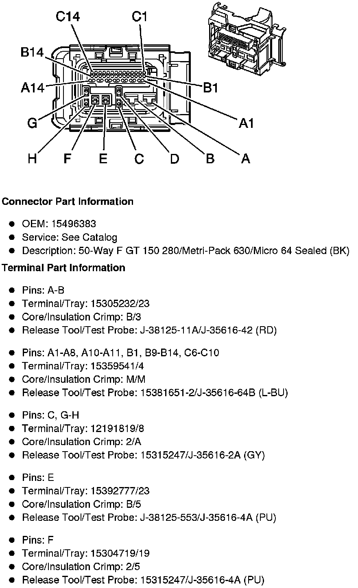
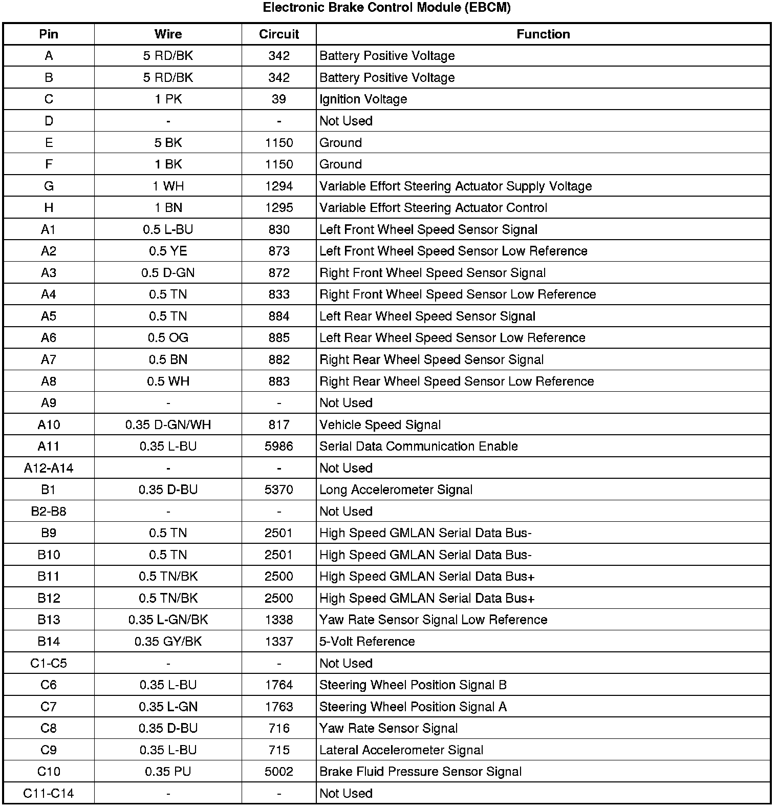

Operation CHARM
: Car repair manuals for everyone.
Home
>>
Cadillac
>>
2008
>>
SRX AWD V8-4.6L
>>
Repair and Diagnosis
>>
Relays and Modules
>>
Relays and Modules - Brakes and Traction Control
>>
Electronic Brake Control Module
>>
Diagrams
Electronic Brake Control Module: Diagrams
Component Connector End Views
Electronic Brake Control Module
(EBCM)

